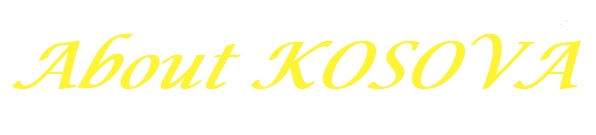
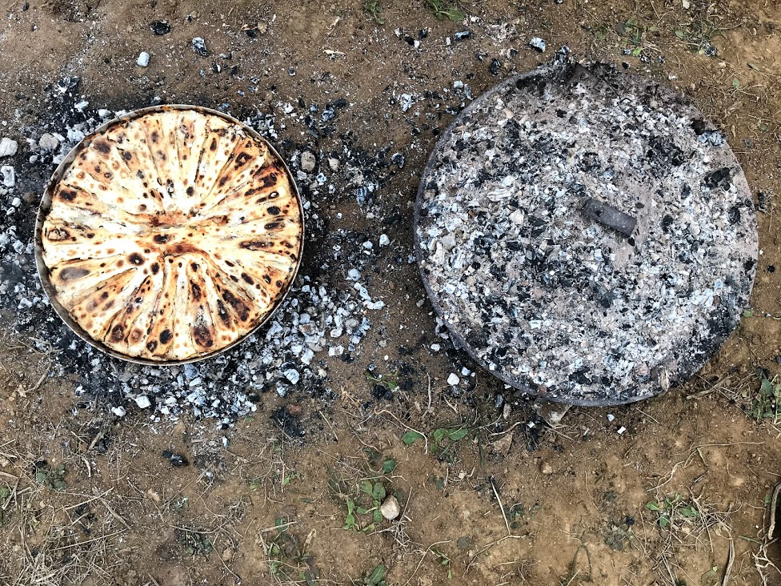
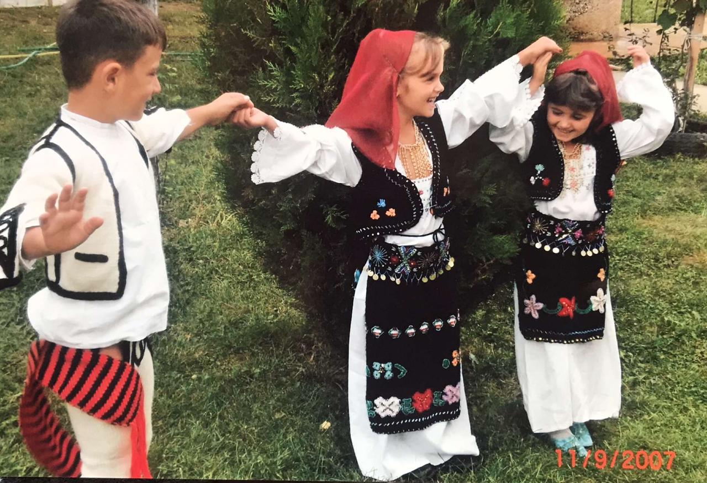
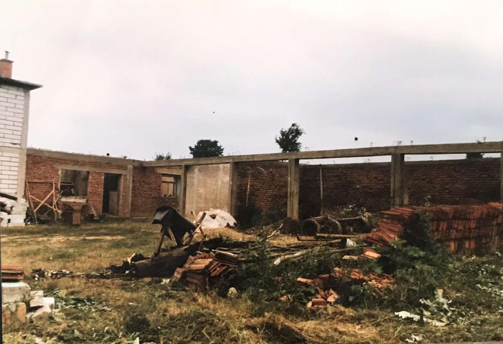

- Kosovo is the youngest contry in Europe.
- Located in Southeastern Europe.
- Capital city of Kosovo is Pristina.
- Official language is Albanian.


Flija is traditional Albanian food. It's more common in Kosovo, and is very delicious. Also, traditional cake is Baklava, which has a wonderful taste.

Kosovo has traditional clothing too. There are different clothes for boys and girls, and also different ones for brides. Moreover, they differ from each region in Kosovo.

In 1998-1999 a war happened in Kosovo. Kosovo was for a long time under Serbian occupation, but finally gained it's independence in 17th February 2008.